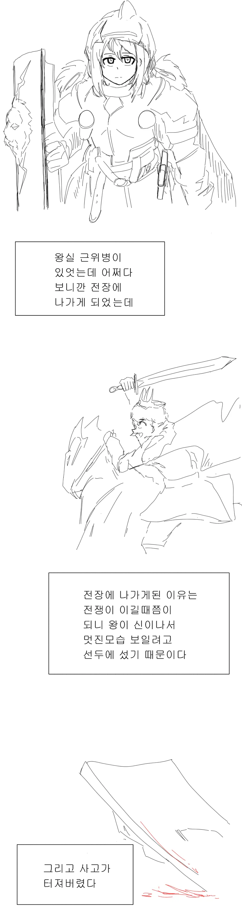
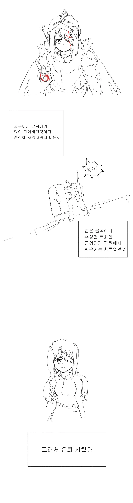
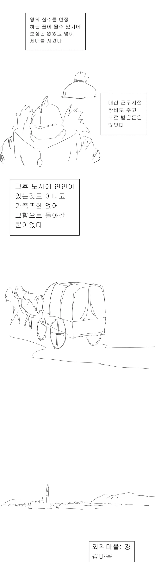
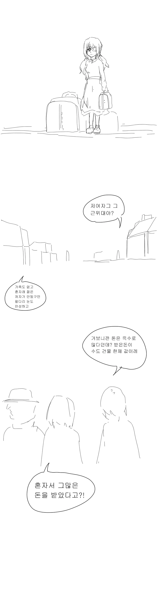
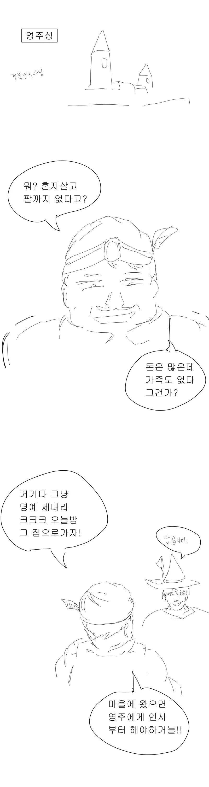
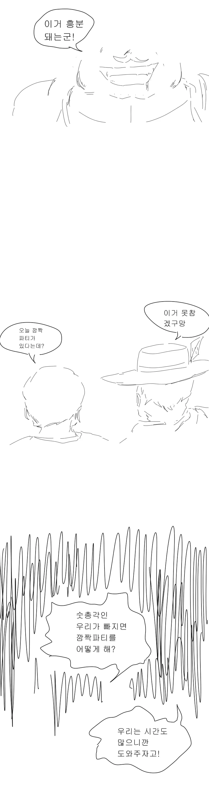
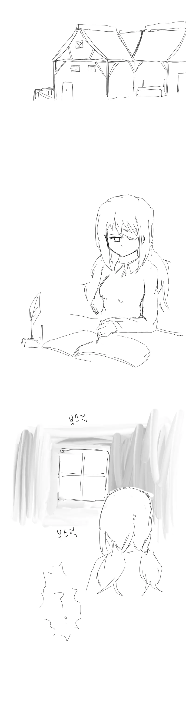
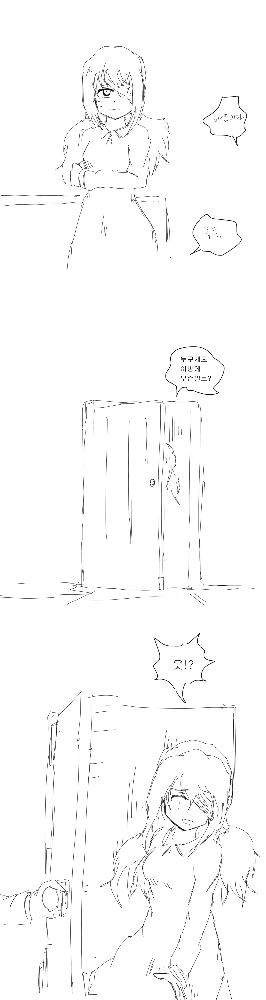
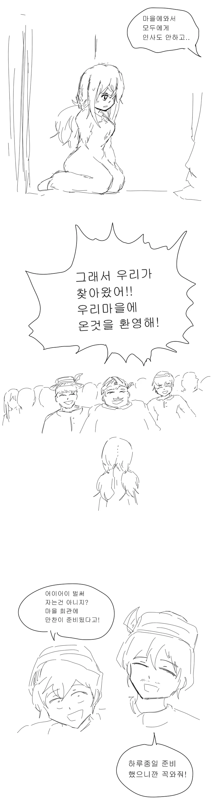
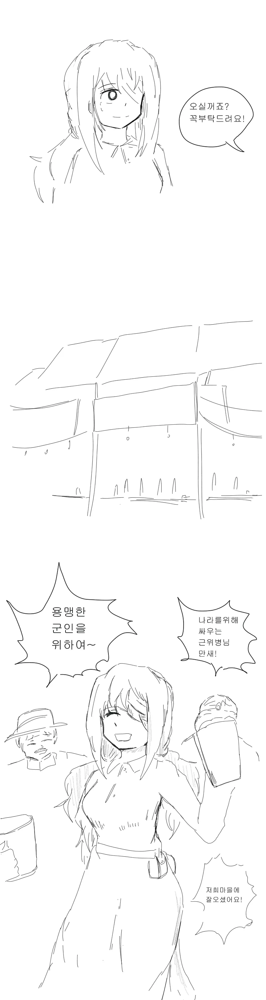

불쌍하잖아...
그림 넘모 꼴려
ㄹㅇ
근위병 : 엉망진창으로 당하는줄 알았어요~
엉망진창(숙취)
그건 내일 코스여~
이게맞다
내일이 설레여서 못자는 근위병
크크큭....온갖 술을 섞어서 마시게 해주지....내일이 되면 어떤 모습이 되어있을지 기대되는걸
캡틴이었다고?
캪틴큐를 대령하랏!

뭐야 이게 끝이야?
술에 약타서 메차쿠차
약(힐링포션)
헛개 진액 타서 약주로 먹어서...
만붕아.. 이리와서 앉아봐라...
Thank you for your service 엔딩 굿
🇬🇷
선봉 근위병이면 인간흉긴데 어케건듬 ㅋㅋ
마나, 기 같은게 존재하는 세계관에서 왕의 직속 근위병이면..
팔, 다리, 폐 한쪽까지 없어도 마을 하나 몰살 시킬 수 있지 않을까.
ㄹㅇ 장비도 다 챙겨 줬다는데ㅋㅋ
33세 독신 여기사가 생각나네
그 전투력이면....
오토메일 팔을 선물로 바치리
ㅋㅋㅋㅋ 이 만화도 웃긴게 불법개조로 드리프트 쳐진 버전을 한번도 못봄
그 메이드랑 도련님 순애 만화만해도 제 배에는 이미 도련님의 동생이…
이런 불법개조가 판을 치는데